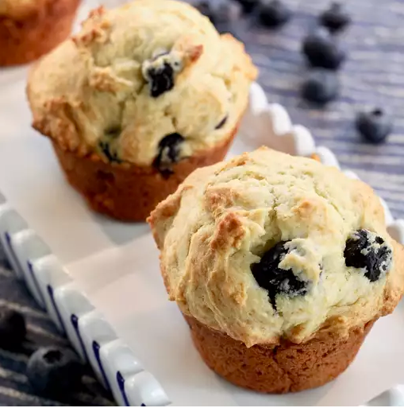

Skyr Blueberry Muffin

This recipe uses Skyr (pronounced as 'skeer'), an all-time local favorite in Iceland usually served at breakfast; it's a thick, tangy yogurt made by curdling strained milk and is high in protein (as an added bonus).
Ingredients
- 1 stick unsalted butter, at room temperature
- 1/2 cup brown sugar, or more to taste
- 1 (5.3 ounce) container blueberry skyr (such as Siggi's®)
- 2 eggs
- 1 ½ tablespoons honey
- 2 large lemons, zested
- 2 cups all-purpose flour
- 2 teaspoons baking powder
- 1/2 teaspoon baking soda
- 1/2 teaspoon baking soda
- 1/2 teaspoon salt
- 1 ½ cups frozen blueberries
Steps
- Preheat the oven to 350 degrees F (175 degrees C). Line 12 muffin cups with paper liners.
- Beat butter and sugar with an electric mixer until light and fluffy. Add eggs one at a time, beating well between each addition. Mix in blueberry yogurt, honey, and lemon zest.
- Combine flour, baking powder, baking soda, and salt in a separate bowl. Gradually add to the yogurt mixture and mix until well combined. Fold in blueberries using a spatula.
- Divide batter among prepared muffin cups.
- Bake in the preheated oven until a toothpick inserted into the center comes out clean, about 25 minutes. Cool in the pan for 5 minutes. Transfer to a wire rack to cool completely.
Gjörið svo vel.
Courtesy of LauraF